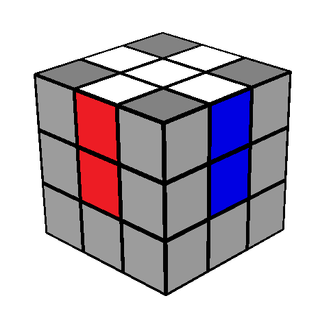

Okay, now the first step of solving a Rubik's cube is the white cross. The white cross comprises four white edges combined to make a sort of plus sign shape. As well as the edge colours matching. I'm going to show you what that looks like on this cube.
The plus sign is solved and the side colours matching. For the first part of this white cross, you don't need to worry about the sides matching, just worry about getting this plus sign. This step is pretty intuitive, you just have to find white edge pieces and try to bring them on the white side. You should try to do this step yourself. It might take a while to understand but after a while you'll get really used to it and become really easy.
Next we need to get these the sides to match up, choose any of the side colours that are unsolved and put the white cross on the bottom. Now what you're going to do is you're going to do your first very simple algorithm. All you have to do is F2 and then the wedge piece will be brought to the top. Now you just need to do random U-layer moves. It doesn't matter which direction you do them to match the side of the edge up with the corresponding centre. For example, if I brought up the white and orange piece, then I would do U-layer turns until the orange colour would match with the orange centre. Then, you would make sure that you turn your cube around so that white is still at the bottom but the matching colour side, in this example, the orange side, is facing the front. And then just do F2 to bring that piece down to the cross. Now what we did here is actually brought another white cross edge piece up and you might think that you messed up but actually it's fine. Now we need to match the side of this white edge piece with its centre. So I can do U turns until the side colour matches with its centre. So we do an F2 again and then we repeat the same process until all four white cross edges back on the white side. There is a chance that the sides are not matching with its centres, in which case, go back to this part. If you completed the white cross and all the side coloursF match like the picture that I showed previously above, then the next step is to solve the white corners, to finish the first layer.